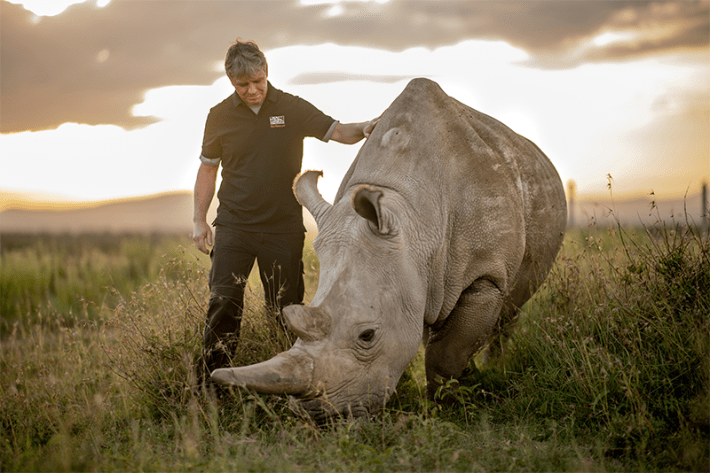
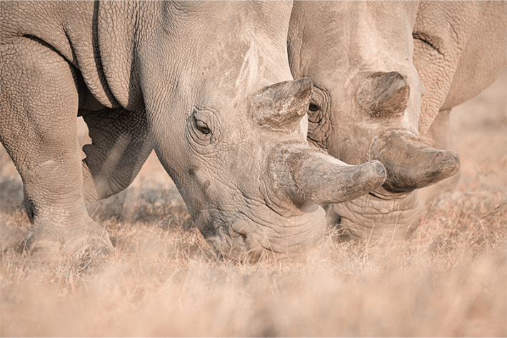
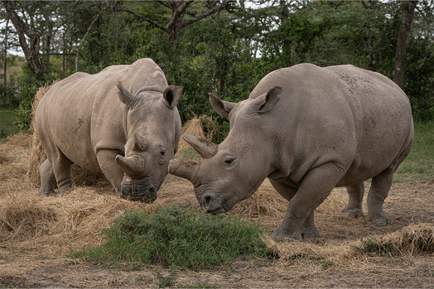
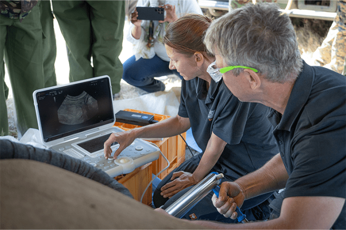

Under the blazing Africansun, I trained my binoculars on Najin and Fatu in Ol Pejeta, a wildlife reserve on the plains of northern Kenya. From a distance, the two rhinoceroses could be mistaken for boulders, propping up the sky. Alongside other travelers in 2021, I watched the pair graze peacefully in the field, their heads bowed down to the dry grass, munching in unison. Although we were far from the animals in a safari truck, everyone spoke in hushed tones.
A mother and daughter pair, Najin and Fatu are the last two northern white rhinos. The rest of their kin have been poached to extinction. When Fatu and Najin die, a thread of presence that connects generations of northern white rhinos to the African landscape, going back more than 10 million years, will be inexorably severed.
Nautilus premium members can listen to this story, ad-free.
Nautilus members can listen to this story.
Najin and Fatu had two horns each—one large at the very front of the snout, and a smaller one behind it. But Fatu’s had been lightly trimmed, blunted, to prevent her from jabbing Najin, who is too elderly now to keep up with Fatu’s play. With two armed guards always by their side, the rhinos looked both inviolate and fragile.
But there is more to the lives of these two rhinos than meets the tourists’ eyes. Behind the scenes, veterinarians, cell biologists, and entrepreneurs are rushing to avert their imminent extinction through gene editing and in vitro fertilization. They believe it is still possible to restore the population of northern white rhinos to the African landscape by using surrogates of a closely related species (the southern white rhinoceroses) impregnated with lab-generated embryos from Fatu.
“A DNA sample is not equivalent to a species.”
A partner in the rhino project is Colossal Biosciences, with a valuation of $10 billion, which made headlines this spring with its claim to have “resurrected” dire wolves, a species of wolf that went extinct some 10,000 years ago (and was the model for the wolves in Game of Thrones). The company sired three wolf pups from the DNA of ancient dire wolf fossils and modern gray wolves. Embryos with the edited wolf DNA were implanted in dogs, mutts that are a mix of hounds. The company asserted it was the first time an extinct species has been revived by science, even though it’s not an exact clone of the ancient dire wolves.
The ambitious scientists aim for a similar approach with the northern white rhino. As with the dire wolf, the rhino experiment is being watched by skeptics. They question whether genetically engineering a northern white rhino is more of an exercise in technological hubris than genuine conservation. One thing is certain: No two rhinos in the name of conservation have been put through more of an ordeal than Najin and Fatu.
The story of the two rhinos begins as a familiar one for charismatic megafauna in the 21st century. Half a million northern white rhinos trod the African continent at the start of the 19th century. By the 1970s, the population was decimated to 70,000. Only a few hundred survived to the end of that decade.
Rhino horns are made of keratin, like hair or fingernails, and have been traded across illegal networks sprawling the globe for bogus medicinal properties and status. While some of the money helped alleviate local poverty, other proceeds have been channeled to fund armed conflicts.
Poaching of rhinos is particularly cruel. With no natural predators in the wild, rhinos are gullible and approach an illegal hunter out of curiosity, especially if lured by a call. They are killed at short range by guns or axe blows to the spine. Their skin may look thick to our eyes, but even a thorn can make the rhinos bleed.

HELLO, NAJIN:Thomas Hildebrandt, founder of BioRescue, offers a friendly pat on the shoulder to Najin, one of the two only remaining northern white rhinos. Photo by Ami Vitale.
The southern white rhinos, whose populations diverged from the northern white rhinos about 200,000 years ago, have also been decimated by poaching in the past century. Their populations have been narrowly restored by South African efforts and today number about 10,000.
In 1975, as the northern white rhinos appeared doomed, a bold and eccentric zoo director, Josef Vágner of the Dvůr Králové Zoo in what was then Czechoslovakia, set out to collect a menagerie of hundreds of African animals. His team captured six northern white rhinos in South Sudan and transported them to Europe. The animals first traveled to Uganda, then onward by train to the port city of Mombasa in Kenya. An ocean liner brought the animals to Hamburg and a river boat transported them along the Elbe River to Czechoslovakia. The journey took nine months.
“It’s phenomenal they survived,” Jan Stejskal, the director of communication and international projects at Safari Park Dvůr Králové (the zoo’s new name), told me recently.
From the beginning, the plan was to breed the rhinos. But the six individuals captured by Vágner refused to mate. A female rhino was brought to the Czech zoo on an animal exchange from the London Zoo—she had been captured in Uganda for a similar exhibition in the United Kingdom—and the dry spell was broken. Her third calf, Najin, was born in 1989. In the same year, three rhinos from the Czech zoo were shipped to San Diego Zoo in the United States.
No two rhinos have been put through more of an ordeal than Najin and Fatu.
Keeping multiple small populations of northern white rhinos in separate locations around the globe was a tactical strategy devised by the network of zoological societies. It prevented a single catastrophic event, such as a disease outbreak, from wiping out the entire captive community, Stejskal told me.
But after Najin was born, the success of all breeding efforts waned. Efforts to artificially inseminate the rhinos or stimulate a pregnancy failed for more than a decade at Dvůr Králové. Only when a bull was returned from San Diego to the Czech Republic did Najin conceive.
In the wild, male rhinos rule a specific territory, marked by dung and urine. When females are ready to mate, they move between the territories until they find their suitable mate. This courtship ritual is difficult to reproduce in a zoo, Stejskal told me. Nevertheless, Najin made her choice with the bull from San Diego.

THE GIRLS:After Najin and Fatu were brought from a zoo to the Ol Pejeta wildlife reserve in Kenya, they quickly earned the affectionate nickname “the girls.” Photo by Jan Zwilling.
Najin calved Fatu in the middle of a hot summer night in 2000. Jan Žďárek was the keeper on duty. He recalled the night with fondness. Hope was in the air, he said. “When she was little, Fatu was a terribly beautiful animal. She was this pale color, very bright.” Fatu was spirited and temperamental and has preserved her character to adulthood. Compared to wild rhinos, Žďárek said, the rhinos in his care were “calm, kind. They like touching, stroking, scratching.”
When Fatu turned nine in 2009, the zoo, with a push from Back to Africa, a nonprofit group based in South Africa dedicated to “giving back to Africa what it has lost,” moved the animals to the Ol Pejeta Conservancy, an established northern black rhino sanctuary. The animals were welcomed warmly. Najin and Fatu quickly got nicknamed “the girls.” They were joined by Sudan, a male who was Najin’s father and Fatu’s grandfather, and Suni, Fatu and Najin’s half-brother.
The move was based on the idea that the wildlife reserve might rekindle the rhinos’ urge to breed on land close to their ancient home range. Yet from 2009 to 2013, mating attempts both within the four northern white rhinos and with southern white rhino bulls failed. One male that mounted Najin was so heavy that he tore her Achilles tendon. Then Suni died, leaving only one northern white rhino male alive in the world, Sudan.
Thomas Hildebrandt, a professor of wildlife reproduction medicine at the University of Berlin, is a preeminent rhino veterinarian. He is charismatic with a tireless energy. For more than three decades he has made it his mission to save the northern white rhino. He worked with the Czech zoo for years on trying to breed them.
In 2014, Hildebrandt traveled to Kenya, collected sperm from Sudan, and examined the girls. Neither could carry a pregnancy. Najin had tumors on her ovaries, and Fatu’s uterus looked “scorched,” as if “someone had poured boiling hot water into it,” Hildebrandt said. The rhinos were in a sorry state. In 2018, Sudan died of old age and the species was pronounced “functionally extinct.”
This pushed Hildebrandt into overdrive. Time was ripe for something “radical,” he said. By 2015, he had gathered funding for a nonprofit group, BioRescue, and a “very futuristic” intervention. Sperm had been cryopreserved from Suni and Sudan, and one other northern white bull, Angalifu, in the San Diego Zoo. Embryos could be generated on a petri dish using the sperm and eggs harvested from Fatu and Najin. A southern white rhino surrogate would carry the pregnancy.

GRAZING IN THE GRASS:Mother and daughter, Najin and Fatu, have been put through a lot by the scientists trying to save their species. Photo by Jan Zwilling.
To collect eggs from Fatu and Najin, Hildebrandt’s team first sedated the rhinos using a potent cocktail of anesthetics. Since the rhino vaginal canal is long and winding, too tricky to navigate mechanically for a veterinarian, Fatu and Najin’s ovaries are accessed through their rectums. Hildebrandt and colleagues designed and patented a special needle angled to fit the anatomy of the rhino for the procedure. The animal is laid on her side and the needle is guided through the rectal wall, puncturing through the ovary to aspirate developing follicles. A course of hormonal stimulants is administered to the rhinos in the days prior to ovum pick up, to increase the egg count, much like in human IVF treatments.
Parker Pennington, formerly an operations manager at the Cincinnati Zoo and Biological Garden who worked with the American Institute for Rhinoceros Science, described the procedure to me as the safest method given the sheer bulk of the animal. “The ovary falls to the rectum wall, and now you’re not passing through body space,” Pennington said. There is a risk of infection, but the rectum is “cleaned very well,” and its thick skin “cleans” the needle along its passage. (Pennington is now an assisted reproductive scientist at Colossal.)
The first egg collection was successful, and an embryo was generated in vitro. To date, Hildebrandt and his BioRescue colleagues have engineered 35 embryos using Fatu’s eggs and the sperm of her grandfather and half-brother. No eggs collected from Najin were fertilized in vitro. She was too old. In 2021, she was retired from further experiments because of their risk to her life.
Is the revival more technological hubris than conservation?
In 2023, a southern white rhino carrying an embryo fertilized from Fatu’s eggs became pregnant. The pregnancy was hailed as proof that embryo transfers could succeed and “a cornerstone in the mission to save the northern white rhino from extinction.” Yet the pregnancy lasted only 70 days. The surrogate mother and fetus died from a toxic bacterial spore in the surrogate’s enclosure on the Ol Pejeta Conservancy. A photograph of Hildebrandt cradling the tiny dead fetus in his hand was selected by National Geographic as one of the most compelling images of the 21st century.
That same year, Hildebrandt and BioRescue partnered with the Texas-based Colossal Biosciences. “They are technology-drivers,” Hildebrandt said. That technology would help drive the next iteration of northern white rhino embryos. Fatu’s embryos, Hildebrandt explained, lack “a diverse genetic background.” Genetic diversity is key to a species’ long-term survival, as it overcomes inbreeding, fatal to animals’ health and ability to adapt to changing environments.
Colossal Biosciences, with its expertise in splicing ancient DNA into cells of living animals, would help engineer the new rhino embryos. They would be produced through “advanced gametogenesis,” the process which turns the rhinos’ pluripotent stem cells (which can self-renew) into reproductive cells. These cells would be edited with DNA from the old skulls of northern white rhinos preserved in museum collections. That way, Hildebrandt said, “We can bring back individuals who lived 200 years ago.”
When I was watching Fatu and Najin on the wildlife reserve in 2021, I spotted another rhino grazing nearby. This was Tauwo, a southern white rhino. Visibly, I couldn’t spot any real difference between the three rhinos.
I later learned from Hildebrandt about the differences between the two species. The northern white rhinos are larger, have bigger skulls and feet, and hair on their ears. “They are not the same because they are highly adapted to their special environment,” Hildebrandt said. If rhinos are to thrive again in northern parts of Africa, it must be the northern whites. This was their territory, one and true home.
Still, I thought in 2021, and even more now, why was so much time, money, and energy being poured into saving two northern white rhinos when the southern white rhinos, not to mention so many other animals in Africa, still needed protection from poaching and human encroachment on their native lands? I asked Barbara de Mori of the Ethics Laboratory for Veterinary Medicine, Conservation, and Animal Welfare at the University of Padua in Italy, who works with BioRescue.

RHINO TECH: Thomas Hildebrandt and Susanne Holtze, a wildlife reproduction biologist, conduct a scan on a southern white rhino surrogate. Photo by Jan Zwilling.
“Because the extinction of the northern white rhino is human made, not based on natural causes, we need to do whatever is possible to save them from extinction,” de Mori said. “We have to develop all the strategies in our possibilities. It’s our duty.”
An independent conservation ethicist, Thom van Dooren, a professor of environmental philosophy at the University of Sydney in Australia, whose research has pioneered the field of “extinction studies,” agreed. But he worried that the extensive focus on technology to turn back time for the northern white rhino was a distraction.
“I think a lot of the people involved are coming from a good place,” van Dooren told me. “But they’re also coming from a place of intellectual curiosity and trying to do cool things with science and technology. And too much of what’s going on in the de-extinction space is being driven by investment and financial imperatives. That creates a murkiness around motivations that prevents us from asking important questions about whether we ought to be doing this or whether we ought to be pursuing the very real conservation problems on the ground for all rhinos and poaching. Because there is a real conservation struggle today. And it’s not taking place in labs.”
The focus on genetics van Dooren continued, ignored the big picture of animals’ interdependence with their environments. “A DNA sample is not equivalent to a species,” he said. Rhinos learn from each other—where the best habitats to forage are, how to fend for themselves on the savannah, how to forge relationships with other species. The failed efforts in captivity showed how important social interactions are to successful breeding. “The idea that we can continue business as usual and put them back in their native environment will not only not work, it allows the real causes of our biodiversity crisis to continue unchallenged,” van Dooren said.
I asked Hildebrandt for a response to the criticisms, and he assured me there would be “zero poaching” of the engineered northern white rhinos. The Kenyan government, he said, will take on responsibility for protecting “this precious element in their nature. They see it as a cultural heritage and a chance to develop ecotourism in a very intelligent way.”
On the Ol Pejeta reserve, I felt melancholic knowing that when the girls died, northern white rhinos would be gone forever. But thinking about the ordeal they’ve been through, the Jurassic Park-like efforts to resurrect their species, and the kinds of lives their offspring might lead, I was left to reflect on something else van Dooren said to me. “It bears considering,” he said, “whether it is better to just let the animals go extinct.” 
Lead photo by Jan Zwilling
Thanks to Pavel Kocian for his English translation of the Czech language.